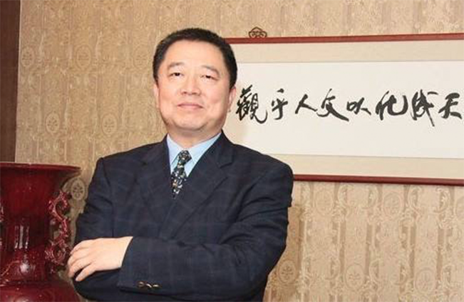

胡葆森董事长2017人大建议：重视历代家训家书的整理与推广振兴家风家教传承
2017-03-14
这里应该是返回的字符串，测试数据
家庭是社会的基本细胞，是每个人人生的第一所学校。修身齐家更是中华传统文化的出发点。端蒙养、重家教、传家风，历来是中国人家庭建设中最重要的部分。家风的形成来自于家礼，家礼来自家教，家教来自家训。中国人的家训智慧，是中华民族特有的一项珍贵文化遗产，其所以形成，是家族长辈守护子孙的大爱，将人生历练所体会出的成功经验，书之于文，条列成为一种训示，令后人耳濡目染，成为言传和身教的典范。整理与推广历代家训家书，振兴家风家教的承传，对于营造家庭幸福，整体提升国民人文素养，缔造和谐社会风气，迫在眉睫。
建议如下：
建立配套政策及专项扶持资金，倡导与推动历代家训家书的整理工作
研究整理中华大家训，萃取珍贵文字，汇集成篇，将中国数千年传统家训所显示的敬祖、敬理、敬人、敬事的观念，弘扬广布。“人必有家，家必有训”。中国人的家训智慧，自古及今，源远流长。从最早的清华简中周文王遗命武王的《保训》，到南北朝时期首部最系统的家训著作《顔氏家书》，再到近代郑板桥、林则徐、曾国藩等的家书，中国家训内容之丰富、涉及面之广博、影响之深刻是世界各国文化所不具备的。2017年元月，中共中央办公厅、国务院办公厅印发《关于实施中华优秀传统文化传承发展工程的意见》，并发出通知，要求各地区各部门结合实际认真贯彻落实。国运昌，文脉兴，这是中国文化里程碑意义的一项事件。建议在传统文化传承工程的实施中建立专向支持政策和专项配套资金，支持和鼓励此项工作。
将家风传承理念导入于文化传统重建的重要内容构成，建立全社会关注重视家庭教育的观念。
家风的传承，是关于家庭教育的，家庭教育是重视对做人的教育。传统家训核心始终围绕治家教子、修身做人展开，实质是道德教育和人格塑造。而且，这些人伦思想和教育方法大多在今天仍不失其积极意义和借鉴价值。现在学校及社会教育，无节制的追求功利，而忽视了家庭教育中重要的关于做人的教育。人人修身、齐家是社会和谐的先决条件。中国人因重视家庭而有家训，有家训而制定家礼，有家礼而形成家风。纵观历代家训，满是“爱”“敬”“勤”“俭”，都是养人德行，恢复其本来性德之学。所以把家风传承理念导入于文化传统重建，建立全社会关注重视家庭教育的观念，是对治社会急功近利、社会道德沦陷之根本。
结合整理成果，出版书籍，制作教材和教程，在各级院校和社会教育机构，特别是社区机构，推广中华家文化，践行家礼。
近年依托中华优秀传统文化的复兴，全国各类传统文化教育机构，包括书院蓬勃发展，据不完全统计，大大小小有三万多家。据了解这些书院和机构普遍缺乏完整系统的教学体系，及与之相配套的教案、教材。以家文化为核心，以家礼为践行内容，以家训为宗旨核心的教材的出版，必定会为城乡社会及社区的书院和传统文化推广机构提供指导和支持。